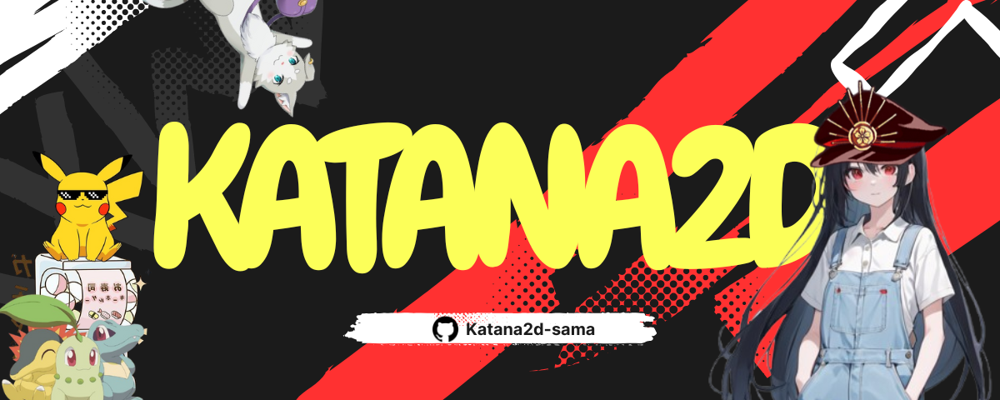

📅 Últimas Atualizações
- 01/07/2025: Página do GitHub Pages criada com banners e changelog!
- 30/06/2025: Adicionado comando
/juroscompostos - 29/06/2025: Organização dos comandos por categorias no bot
- 27/06/2025: Início do beta público entre 19h e 00h
🖼️ Banners da Mika-chan
